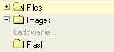

W oknie z katalogami wyświetlone są katalogi w postaci drzewa, które służą do nawigacji po strukturze katalogów. Katalogi służą do lepszego zorganizowania plików.
Ażeby otworzyć folder, i tym samy zobaczyć jego podfoldery, kliknij w znak "plus"
( ) umieszczony przed nazwą folderu.
Jeżli znak plus nie jest widoczny, oznacza to że folder nie zawiera podrzędnych katalogów.
) umieszczony przed nazwą folderu.
Jeżli znak plus nie jest widoczny, oznacza to że folder nie zawiera podrzędnych katalogów.
Spójrz na skecję "Ładowanie na żądanie" w dolnej partii tej strony, ażeby zrozumieć w jaki sposób katalogi są załadowywane.
Żeby zamknąć katalog i schować podrzędne katalogi, kliknij w znak "minus" ( ) znajdujący się z przodu nazwy katalogu.
) znajdujący się z przodu nazwy katalogu.
W celu zaznaczenia katalogu w CKFinderze, kliknij na nazwe katalogu albo na jego ikonkę. Zaznaczony katalog będzie miał inny kolor tła.
Inne bardziej zaawansowane operacje na folderach mogą zostać wykonane przy użyciu "menu kontekstowego". Następujące operacje są dostępne:

Wskazówka: Pewne operacje mogą być niedostępne, w zależności od ustawień przydzielonych przez administratora. Zobacz sekcję "Uprawnienia" w celu uzyskania informacji na ten temat.
Ażeby utworzyć pokatalog wewnątrz bieżącego katalogu, kliknij na opcję "Nowy Podkatalog" dostepna w menu kontekstowym. Po kliknięciu pojawi się okno dialogowe z pytaniem o nazwę katalogu. Po prostu wpisz nazwę katalogu i potwierdź.
Nie wszystkie znaki mogą być użyte w nazwach plików i katalogów z powodu ograniczeń systemów operacyjnych, na których CKFinder może zostać uruchomiony. Przykładowo, następujące znaki nie moga zostać użyte w nazwach plików/katalogów: \ / : * ? " < > |
Ażeby zmienić nazwę katalogu, kliknij opcję "Zmień nazwę" w menu kontekstowym. Po kliknięciu pojawi się okno dialogowe, zawierające obecną nazwę katalogu. Wpisz nową nazwe i potwierdź.
Nie wszystkie znaki mogą być użyte w nazwach plików i katalogów z powodu ograniczeń systemów operacyjnych, na których CKFinder może zostać uruchomiony. Przykładowo, następujące znaki nie moga zostać użyte w nazwach plików/katalogów:\ / : * ? " < > |
Uwaga: zmieniając nazwę folderu, odnośniki do plików w nim zawartych przestaną być "prawidłowe", tym samym strony internetowe zawierające pliki z tego folderu nie będą wyświetlać poprawnej zawartości. Z tego powodu zalecamy ostrożność przy korzystaniu z tej możliwości.
Ażeby skasować katalog wraz z zawartością, kliknij opcję "Usuń" w menu kontekstowym. Przed usunięciem CKFinder poprosi Cię o potwierdzenie operacji.
Uwaga: po usunięciu katalogu, odnośniki do plików w nim zawartych przestaną być "prawidłowe", tym samym strony internetowe zawierające pliki z tego folderu nie będą wyświetlać poprawnej zawartości. Z tego powodu zalecamy ostrożność przy korzystaniu z tej możliwości.
The most important difference between CKFinder and the folders tree found in operating systems, is that, in CKFinder, the folders are loaded "under request". It means that it doesn't load the entire folders tree at startup, but loads a small subset of them when "opening" the folder. This is a requirement on advanced web applications like CKFinder.
To indicate that folders are being loaded, the "Loading..." label may appear when opening a folder:

The label will automatically disappear once the folders load is completed. Once loaded, the label should not appear anymore for that folder.